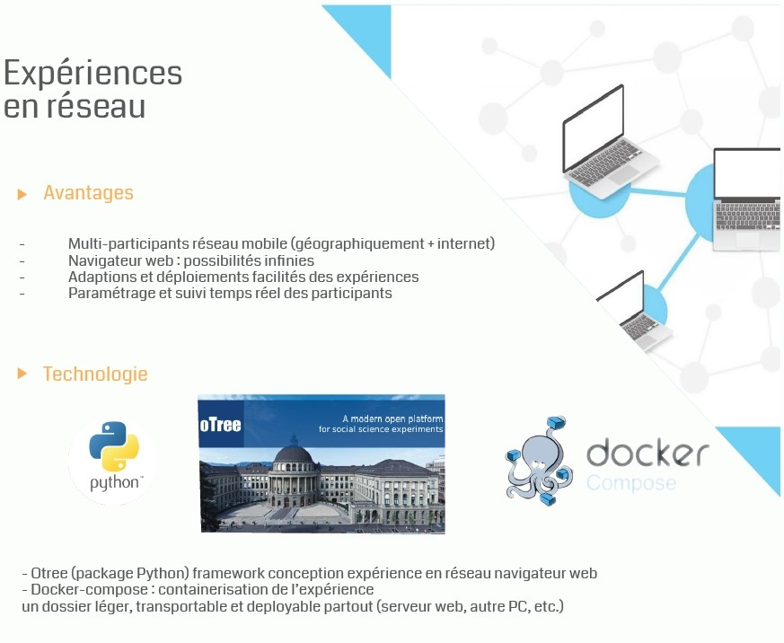
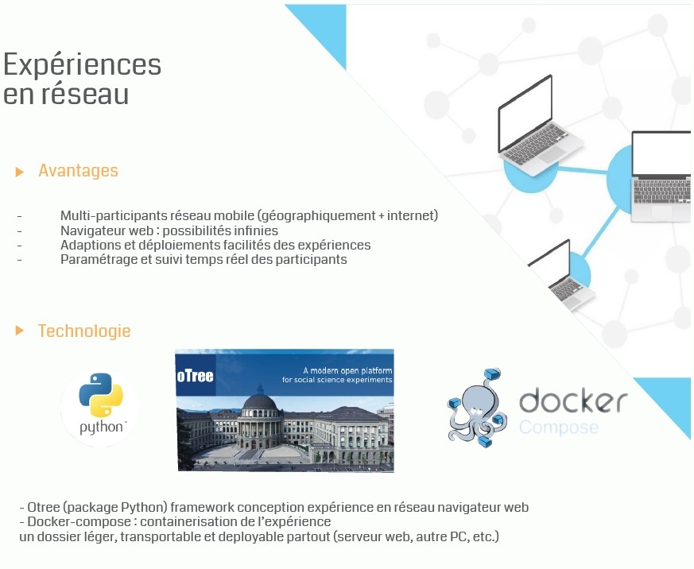

La place de la P2AC dans les projets de recherche interdisciplinaires
P2AC
Spécialisée en Sciences Humaines et Sociales (psychologie, marketing, économie, etc.)Compétences et outils (informatiques, électroniques et numériques) pour l'analyse des comportements humains
Conçoit des environnements (réels, virtuels et mixtes) contrôlés et des outils informatiques
Mesure la réaction des utilisateurs (comportementale, physiologique, cognitive, etc.)
Concevoir
 

Mesurer


Interdisciplinarité
Exemple de l'Interaction Humain Machine
Le département Interactions s’intéresse à l’interaction entre l’humain et la machine avec un regard pluridisciplinaire
alliant nformatique, traitement du signal, psychologie cognitive, psychologie sociale et ergonomie cognitive.
Cette thématique englobe les multiples moyens matériels et logiciels qui peuvent être mobilisés pour établir un lien entre l’humain et l’ordinateur,
la compréhension de l’humain pour la conception de nouvelles interfaces
la compréhension des interactions sociales entre humains pour assister leur collaboration grâce à l’ordinateur.
2 liens :
Concevoir pour mesurer (SHS)
Utiliser la technologie pour comprendre l'humain dans sa grande diversité et dans un contexte donné.
Mesurer pour concevoir (Informatique)
Utiliser la réponse d'un humain pour developper une technologie (produit, service, algo, etc.).
Quelques projets hébergés par la P2AC
L'ambition de la P2AC n'est pas d'adresser toutes les disciplines des SHS et de l'informatique.
La plateforme s'interesse aux comportements humain.
Mesurer pour concevoir : displines centrées sur les IHM et developpements RV (informatique).
BU
Concevoir pour mesurer disciplines centrése sur l'analyse des comportements (SHS)
IAT
La place de la P2AC
Soutiens à la recherche, dans l'une, l'autre ou les deux disciplines. Avec plutôt des activités de developpements / conception et de traitement (signal & statistique).
Eviter le chercheur ingénieur dans le cadre de l'un ou l'autre des disciplines
Favoriser les liens par un lieu neutre qui possède des compétences dans les 2 disciplines
Projet avec des étudiants, thésards
Projets de valorisation (éco, médiation, etc.)